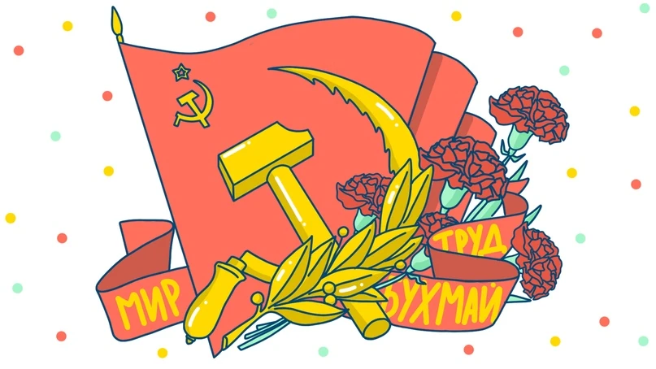
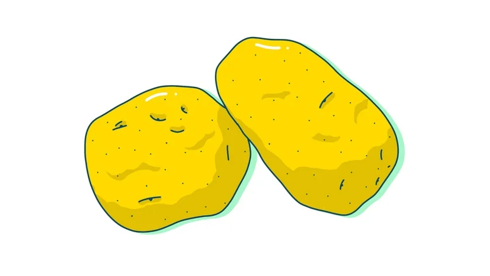
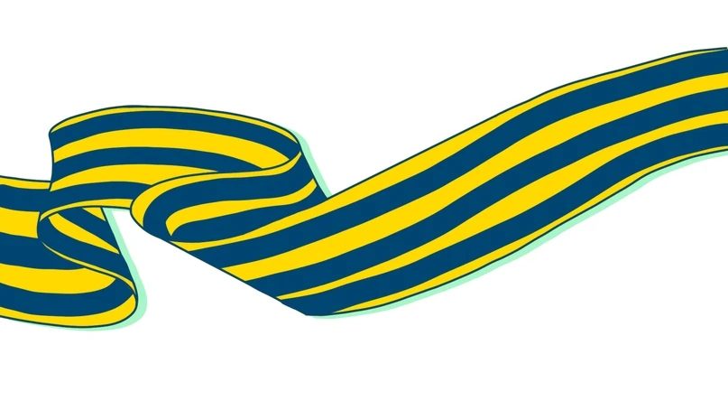

Созерцательное эссе Данилы Блюза о самом благословенном времени в году — майских праздниках

Нормальная, человеческая весна наступает только в мае. До этого — какая-то наебка. В марте все еще морозы, гололед, сосульки. В апреле — грязь, какашки, слякоть, ветрище. И только в мае приходит правильная весна — выглядывает солнышко, асфальт высыхает, распускаются набухшие почки, прет из земли трава, просыпаются жуки, мухи, начинают петь птицы, а девки заголяют ноги.
Вольно дышится человеку после долгой зимы. И первое, чего ему хочется новой весной, — это нажраться. Благо поводов в начале мая предостаточно!
1.
1 мая человек встает рано утром, наряжается во все самое лучшее, берет знамя и идет на первомайскую демонстрацию. Несмотря на то что коммунистов уже давно выгнали из страны, некоторые традиции от них остались. Одна из них — праздновать 1 Мая, или День Труда.
Так уж вышло, что приходится трудиться «в поте лица своего», чтобы «снискать хлеб насущный», как завещал Господь, изгоняя нас из рая. Большинству людей труд никакой радости не доставляет. Для них работа — несусветная каторга, на которой приходится корячиться в ожидании смерти. Поэтому, чтобы человек совсем не свихнулся от горя, ему велят каждое 1 Мая приходить с коллегами строем на главное место в городе. Там Самые Главные Люди крикнут ему в ухо из громкоговорителя: «Спасибо!». Человек тогда прослезится, почувствует, что его труд не напрасен, а жизнь имеет смысл, и вновь станет пригоден для нещадной эксплуатации.
Первомай — отличный повод нажраться с утра. Солнышко светит, вы идете в толпе коллег, с небес льется музыка и, кажется, сам Господь говорит: «Приветствуем сотрудников мусоросжигательного цеха! В этом году они поставили рекорд по переплавленным покрышкам!». И у души будто бы вырастают крылья, и ты воспаряешь. А воспарив, как не выпить?
И вот вы с коллегами отделяетесь от колонны, сворачиваете в ближайший двор. Там достаете купленные заранее бутылки, колбасы, соки, консервы, потому что по маршруту следования все винно-водочные и даже пивные ничего не продают.
В финале каждый двор по этому самому маршруту заполнен шумными пьяными компаниями трудящихся. К полудню никто из них уже ни черта не соображает. Это ли не прекрасно? Только полдень, а ты уже пьян в дымину и впереди почти нетронутый выходной! Раньше ты надирался лишь по вечерам и был ограничен временными рамками, потому что нужно ложиться спать — утром на работу. А здесь — целый день синьки и угара! В такие моменты понимаешь, что настоящее счастье для всех трудящихся — это развратная пьяная праздность.
2.
Еще одна составляющая майских праздников — это картошка. Некогда привезенный Петром I корнеплод стал в России «вторым хлебом», а его посадка — центром всей садоводческой деятельности. На картошку едут всей семьей, потому что «картошечку-то кушать все любят, а как сажать, окучивать, выкапывать — их не дозовешься». Посадка одного картофельного клубня требует множества манипуляций, поэтому каждому члену семейства найдется здесь работа.
Самый главный в семье роет лунки, второй по старшинству несет ведро с семенной картошкой и бросает клубни в лунки, третий кидает в лунку золу, четвертый — навоз. Если войти в правильный ритм, то можно очень быстро засадить все картофельные грядки. Ну а после того как Дед скажет удовлетворенно: «Ну все, похоронили!», можно всем семейством приступать к обмыванию будущего урожая.

Садовод, который на майские праздники не успел посадить картошку, поднимается товарищами на смех, слывет отныне лентяем и бездарностью. Старухи в платочках и с сумками на колесиках указывают на него пальцем и, хихикая, шепчутся, старики вяло пожимают руку, не угощают «Примой», не рассказывают анекдотов и баек с рыбалки.
Подобный позор смывается только кровью. Рано утром, когда горизонт едва забрезжит розовым, садовод умывается, надевает белое кимоно и выходит в огород. На картофельной грядке он садится в позу сейдза, левой рукой наливает себе стакан водки и в четыре глотка его выпивает. Выпив, садовод снимает верхнюю часть кимоно, берет нож «кодзука» и втыкает его в левую часть живота. Погрузив нож на достаточную глубину, садовод делает надрез на животе слева направо. В этот момент бабка садовода поднимает катану и ударом сверху вниз срубает ему голову. После ритуала все использованные орудия выбрасываются в мусорную кучу, потому что отныне в них поселилась смерть. В случае, если ритуал исполнен должным образом, на следующем собрании садового кооператива портрет покойного садовода вешается на доску почета.
3.
Ну и, конечно, самый главный майский праздник — 9 Мая. В этот день все вспоминают, что тот зловредный дед, орущий на детей с балкона, и та старуха, которая с помойки все в дом тащит, — они не обычные старые надоеды, они — ветераны. Они когда-то кровь проливали за эту страну в самой страшной войне в истории человечества и все вы — черножопые, узкоглазые и пархатые — сейчас живы только благодаря их Великой Победе.
В этот день старичкам приходит письмо от Путина, про них снова вспоминают. Все, от мала до велика, идут к ним домой, отмывают их в тазике, причесывают, надевают на них пиджак с медалями и ведут на парад.

На параде в мегафон на них тоже орут Самые Главные Люди. Потом ошалевшим от внимания ветеранам дарят комплект постельного белья, мешок крупы, ящик консервов, электрический чайник, китайское радио, брелок-фонарик, массажер для спины, пояс из собачьей шерсти, пакет карамелек, вазу, рулон обоев. А розовощекие школьники им споют хором: «Хмелел солдат, слеза катилась. Слеза несбывшихся надежд. И на груди его светилась медаль за город Будапешт».
Следом старичков повезут на кладбище, постоять у монумента, затем — на концерт самодеятельности. А напоследок — в банкетный зал, где они будут сидеть за столиками, незнакомые друг с другом, и перечислять всех умерших в этом году друзей, потому что самому молодому ветерану сейчас должно быть около 92 лет. Салат, суп, горячее, десерт, водка. Опять же развлекательная программа из школьников и самодеятельности. Благодарности от Самых Главных Людей, но уже без мегафона. И просветлеют и порозовеют заскорузлые ветераны, начнут оттаивать, может, даже песенки какие подпевать, но хорошего помаленьку! В конце вечера их, захмелевших, погрузят в пазик и развезут по коробкам-квартирам, где запрут на замок до следующего года.